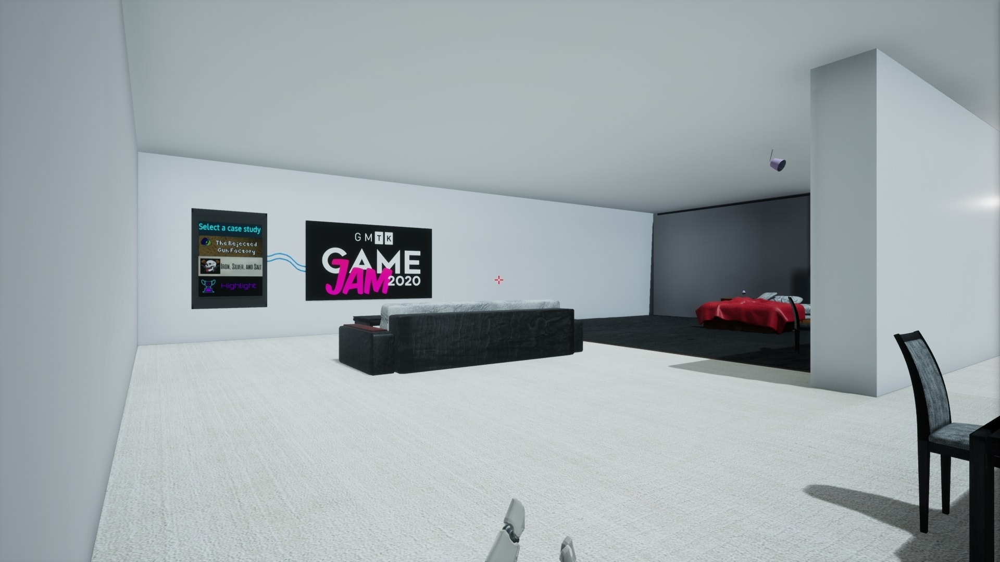
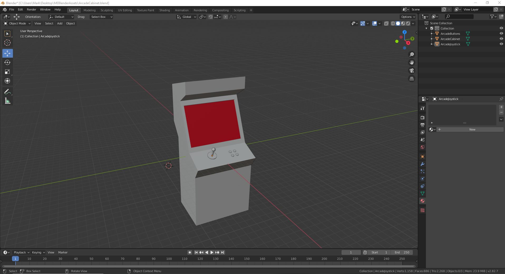
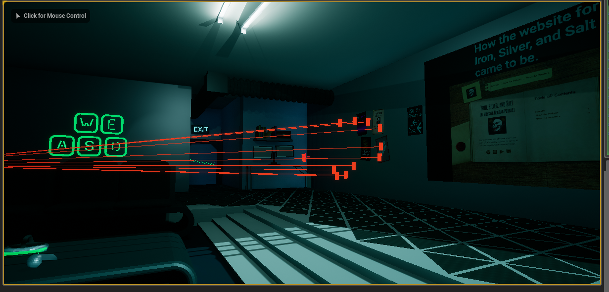
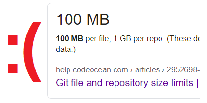

An Interactive Portfolio
Overview
Shown in the video, and downloadable through the link above, I created an interactive alternative to the more standard html-based portfolio (like the one you are currently perusing). Select a case study to watch, view examples of my works in progress, and learn a bit about my backstory at your pace, as you walk through a virtual apartment of my own construction.
Tools
V1.0
Initially when I had the idea to create an interactive portfolio, I had no idea how to create my own models. This limitation brought about a fairly standard-looking apartment, filled with objects I could find for free. While this did work, I felt that the apartment didn't fit the asthetic I would have liked.
Additionally, the interactive elements all depended on being hit by the invisible balls sent out by the player. While this did work, there was a small delay between pressing the key and the object responding. It was also possible to walk into an object's hitbox, and accidentally trigger its associated event. For version 2.0, I decided to change this.
The final hurdle that pushed me to rebuild the whole experiance was the discovery that UE 4.25 could not output content for HTML without some extremely dedicated modifications to the engine. After several weeks of trying to work around this limitation, I decided it would be easier to start over in an older version of Unreal- one that did natively support HTML output.
V2.0
After watching and reading too many tutorials for Blender and Unreal, it was time to start building the new apartment. I chose a cyberpunk theme since I felt it matched the look and feel of my html portfolio (what you're reading right now- for which I thank you).
I also overhauled how the player would interact with the various elements in the game. Running a line trace whenever the player pressed the corresponding key removed the accidental interactions of the previous version. Additionally, I made interactable objects glow whenever the player looked at them, helping improve the user experiance.
So what now?
The next big goal is to get this experiance working in-browser; as that was the entire reason to downgrade UE4. Naturally, accomplishing that is coming with its own set of challenges (UE 4.23 packing 200 MB of extra data into your output to name one), but I'm currently exploring a few solutions to that problem.
After that, I plan to add more ways to interact with this digital apartment. It's been really fun coming up with different ways to present my various efforts, and I am by no means done updating this. If you have a cool idea, or just want to share your thoughts, please reach out using the buttons below! I'd love to hear your feedback.